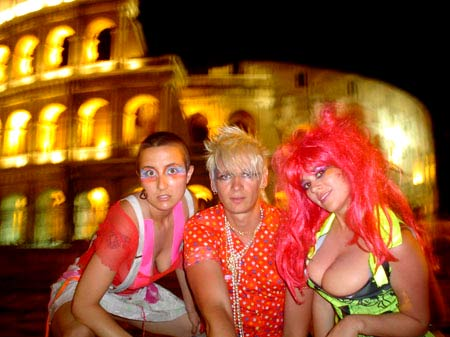
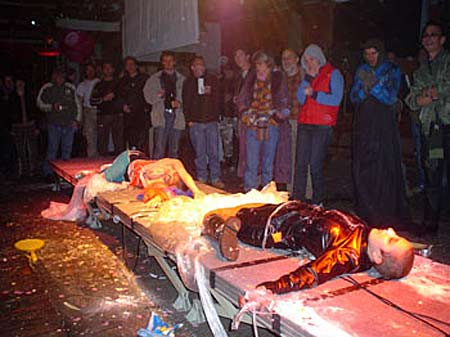

| Private Parts | 13. August - 2005 | |
 |
||
| Guest performer: Team Plastique (Australia). Team Plastique are a bunch of posers posing as posers. - Psykat is an escaped mental patient, - Legs Akimbo channels her past lives on stage - and Axel Danke Schon is the Team’s muse on-stage and off.
Team Plastique have also organized crazy events in Berlin and Australia such as Tutti Frutti (based on the German game show where contestants stripped for prizes), This is Not Ibiza and Poodletronic. The Team also creates art installations and designed the entrance for Australia’s largest Festival- The Big Day Out in 2004. Team Plastique are from Australia, but are now living in Berlin. They have already toured to several European countries and supported acts such as Peaches and Chicks on Speed. Team Plastique are also proudly sponsored by Smirk Underpants International. website: www.team-plastique.com |
||
 |
||